contents | previous | next THE fatigue of travelling, and the sufferings from sea-sickness, were rendered supportable to Rosalie by every care and attention which vigilant love could dictate. Having recovered from the latter, and wondered at the novelty which a French town presents to one who never before crossed the channel, the travellers proceeded, after a few days rest, to Paris, and from thence to Lyons. Rosalie, though delighted with her journey, and acquiring new ideas at every step, was impatient to proceed, because she dreaded nothing so much as that the mother of Montalbert should discover, by his protracted stay, that he had been to England; while he, more solicitous for the health of his lovely
wife, than influenced by any other motive, regulated his journey rather by her convenience, than by the necessity of appearing in proper time for his supposed Sicilian voyage, leaving his friend, the Prince of ——, the care of keeping up appearances for him as well as he could. Had not apprehensions of what might happen to embitter his future felicity a little derogated from the enjoyment of the present, it would have been difficult to have found a happier being than Montalbert. While he pointed out to Rosalie the beauty of the country through which they were passing, every scene, every view, seemed to acquire new charms: the pleasure which the varied prospects of nature gave to her young and unadultrated heart, the desire of information she expressed, and the sense and solidity of her remarks, communicated to him delight more exquisite than that which he felt in contemplating the beauty of her form and face, which, he could not but observe, attracted
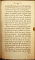 View image of 135universal admiration wherever she appeared, even in the haste of a journey, and under the few advantages of a travelling dress. In France, superior or even common beauty is generally much noticed, and almost at every post town Montalbert heard some observation on the loveliness of la jeune Anglias; or, if they remained in any city more than a day, had an attempt made by some gay young man or other to be introduced to his notice. From these sort of acquaintance, however, Montalbert shrank, with a sensibility unusual on such occasions to his natural character, which was open, unsuspicious, and sociable. He not unfrequently was sensible of something like jealousy, for which he failed not to reason with himself; but still his dislike of the adulation which he saw likely to be offered to his wife, wherever she appeared, conquered the sense he had of the absurdity of feeling such a sentiment in regard to her, who was all innocence and simplicity; who certainly lived but to please
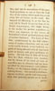 View image of 136 him, and was so unconscious of her personal attractions as not to have the least idea of the reasons which made him avoid every sort of society on the road. She imputed his shunning it, to the fear he had, lest he should be met by some of his former acquaintence, who might betray to his mother his present expedition.—There was, however, in this reserve of Montalbert's less of personal jealousy than of another sentiment. The mind of Rosalie, unadultrated by the false refinements of modern education, and yet anew to the world, seemed, to her husband, capable of being adorned with all that lends grace to beauty, and gives perfection to genius. She had seen so little of society since her short residence near London, that the bloom of the mind (if such an expression may be allowed) had not been tarnished by any commerce with inferior society, or the common studies of a circulating library. Her natural understanding was excellent, and she had more judgement than generally attends on so much
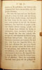 View image of 137genius as she possessed; but hitherto this judgement had been unexercised, and this genius dormant. The little she had read was but ill-calculated to form the first, and the society she had been usually among, had allowed her little scope for the latter: but, at a very early period of her life she became conscious, that such sort of people as she was usually thrown among, people who only escape from dullness by flying to defamation, were extremely tiresome to her, though she saw that nobody else thought so, and suspected herself of being fastidious and perverse. The cold, and sometimes contemptuous treatment she had met with from her supposed sisters, the little real afection she had ever found from the persons whom she believed to be her parents, had rendered her timid and dissident.—As nobody but Mrs. Vyvian seemed to love her, she supposed that to none but Mrs. Vyvian she seemed worthy of affection. Since the explanation that had been given all the passages of
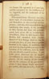 View image of 138her former life appeared in a new light, and she accounted for the indifference of her supposed, and the tenderness of her real, parent. This extraordinary discovery was a frequent topic of conversation between her and Montalbert as they pursued on their journey; and they often canvassed the circumstancs that would, if the narrative of Mrs. Vyvian had been less authenticated, have given rise to incredulity.—Montalbert, when he first heard it from Rosalie, had remarked these circumstances—"It is strange (said he) that the account you have of your father's present situation is so vague, so indistinct, that you have no clue to guide you even to the certainty of his existnece, none by which you can identify yourself to him. I can make every allowance for the singular circumstances in which Mrs. Vyvian was placed; for the timidity of her temper, and for the violence of my grandfather, whom I have always heard represented as a tyrant, who was not to be, would not
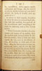 View image of 139be, contradicted. Still it appears equally unfortunate and strange, that she omitted to tell you whether he knew of your birth? whether the family of Ormsby were apprised of it?" In answer to these remarks, the justice of which she however acknowledged, Rosalie bade him recollect, how much of all the circumstances most interesting to her might be unknown, even to Mrs. Vyvian herself. "When I remember (said she) the countenance and manner of my mother, when she recalled those scenes in which she suffered so cruelly; when I think how little capable she was, even at this distance of time, of dwelling on those parts of her story, where she had occasion to name my unfortunate father, and the awe she had of her own, as well as the tyranny she has since experienced from Mr. Vyvian, and the necessity there has ever been for secrecy as to a part of her former life, which would undoubtedly have aggravated her ac-
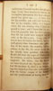 View image of 140 tual sorrows, I cannot wonder, though, perhaps, I may have occasion to lament, the incomplete information this dear unhappy parent has given me......I have seen her lips tremble, and cold and death-like dew on her temples, while, in a languid voice, she was relating what I have repeated to you; and I know that no motives less powerful than her love and her fears for me could have engaged her to write as she did to you. Long years of sorrow have so broken her spirits, that the most gloomy ideas sometimes take possession of her mind; she trembles, lest incidents in her life, for which surely she has already been punished sufficiently, should still draw the anger of Heaven on her children, as well as hazard her future happiness. She thinks, that she should not have deceived Mr. Vyvian; though, had she not done so, there is no imagining what might have been the consequence from the furious temper of her father; and the consciousness of having done so
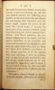 View image of 141has made her patiently submit to very unworthy treatment—offering (to use her own pathetic phrase) her sufferings as a sacrifice to the God whom she had offended, and hoping their bitterness and duration might expiate the errors of her early life.—From hence I account for many parts of my mother's conduct, (continued Rosalie), that before appeared mysterious. Her severe penances; her voluntary resignation of the world, and her patient submission to the undutiful and even cruel conduct of her daughters; and from the pains these ladies took to alarm her about their brother's attachment to me, though ignorant of all the agonies they were inflicting, I have an explanation of that forced and involuntary neglect of me, which rendered me so very wretched for some time, and of which I am persuaded nothing but this cruel idea could have induced her to assume even the appearance." Montalbert listened silently to this natural and sensible vindication of conduct,
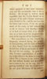 View image of 142which appeared to him more extraordinary and less accountable than it did to Rosalie. He thought it, indeed, almost impossible that Mr. Vyvian should be so ignorant of his wife's former attachment as he seemed to be; and he was sure that her father had known, if not all, yet so much of the truth, as had induced him to act in concert with Ormsby's family, or at least to compel them so to act with him as to have saved his daughter's honour at the expence of her happiness. The conversation on this subject was frequently renewed during the progress of their journey, and the tears of Rosalie as often flowed from the recollection of the sad state of spirits and health in which she had left her mother. So great were Mrs. Vyvian's apprehensions of accident, that might discover the secret so long cherished like a serpent in her bosom, that she had desired Rosalie and Montalbert not to write to her on the way, thus depriving herself of what she owned would be one great alleviation of the restraint
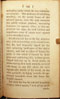 View image of 143and misery under which she was condemned to repine. The moments of reflection, therefore, on the uneasy hours of this beloved parent, were the only moments that passed without pleasure, amounting sometimes to rapture, when, as they approached the Alps, the most sublime and magnificent views of nature were opened to her astonished view. Accustomed of late to the flat, monotonous, and uninteresting views round London, she had frequently sighed for the more animating landscapes of her native country, and had no ideas of beauty superior to that which is formed by those green and undulating hills, in some places fringed half-way up by beech woods, in others, rearing their turfy mounds, covered with sheep on one side above the once impenetrable forests of the weald, on the other gradually declining towards the apparently boundless ocean that forms the English channel. But when she saw the rich and luxurious country, which nature, "with all her great
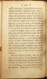 View image of 144works about her," spreads before the astonished traveller, between Lyons and Civita Vechia, the port from whence Montalbert determined to embark for Sicily, in order to avoid both Rome and Naples, her mind was exalted by scenes so much superior to any she had ever formed an idea of either from the efforts of the pen or the pencil, she seemed transported to a world of higher rank in the universe than that she had inhabited while she was in England; and she was of an age and dispositon to forget, or at least be indifferent to those circumstances which can hardly fail to remind English travellers, that, though other countries may have more bold and attractive scenery, their own is that where life is enjoyed with the greatest comfort. Arrived at Civita Vechia, after an abscence of ten weeks, from England, Montalbert felt some degree of uneasiness when he knew he must hear from his friend, the Count d'Alozzi, what had passed during his absence. From this he was relieved
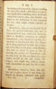 View image of 145by finding a servant of the Count's waiting for him with a small vessel hired to convey him and Rosalie to Messina, where the Count waited his arrival, that, after Rosalie was fixed at the habitation he had prepared for her, they might return together to Naples. Montalbert, who now saw himself freed from the painful solicitudes that had so long perplexed him, would not, however, listen to Rosalie's entreaties to embark immediately; but, fearful of exposing her too soon to sea-sickness after the fatigue of so long a journey by land, he remained a few days at the port, while Rosalie, who had no terror so great as that of meeting the mother of Montalbert, and no idea how far she was from her, concealed herself at the inn where she lodged, and could not, without alarm, suffer Montalbert to quit her for a moment. Montalbert, however, knew that this was not a place where it was likely he should be known, remained with great
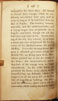 View image of 146 tranquility for three days. All seemed to favour their voyage, which he cosidered, not without some pain, must be twice as long as if he had sailed from the Bay of Naples. The weather, however, was mild, and the wind favourable; and a voyage begun thus propitiously was as happily concluded, though not till they had been eight days at sea. On the evening of the last, they entered, by as bright a moon that ever enlightened the swelling of the Mediterranean, the port of Messina. Never did the magnificent spectacle it afforded give more delight than Rosalie felt, as, sitting upon deck, Montalbert pointed out to her the beauty of the scene: the inconveniences and tediousness of the voyage were no longer remembered. As the vessel slowly approached the shore, every object, in the beautiful bay, was distinctly visible; the bright light of the moon fell on the long line of magnificent buildings that overlook the sea:, above which rose the mountains, whose outline was boldly mark-
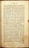 View image of 147ed in the deep blue æther, while Etna, no otherwise distinguished than by its towering grandeur, rose sublimely above the rest. The sea, calm as the Esculean above it, scarce broke in trembling lines as it approached the shore, but seemed to be with all nature in deep repose. At the distance of two or three miles were seen floating lights of the fishermen employed in taking the pisca spada, or sword-fish, which gave to the gently undulating tide the appearance of being enchanted, and of bearing fairy lights on its bosom. Arrived at the lodging provided for him by the active friendship of his friend, the Count d'Alozzi, Montalbert saw his beloved Rosalie in safety, and all his cares were for the present suspended; but this could not, he knew, last long. He had many acquaintances at Messina, and many people were there occasionally who knew his mother; it would, therefore, be unsafe for him to appear publicly with his wife, and, after one day of repose at his lodings, they removed in a carriage, with
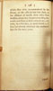 View image of 148 which they were accomodated by the Count, to the villa he had lent them, at the distance of hardly three miles from Messina, where they found every thing that could contribute to their convenience; and were, in a few days, as much settled as if they had already inhabited this enchanted spot for for many years.
|
){kind=link}
){kind=link}
){kind=link}
){kind=link}
){kind=link}
){kind=link}
){kind=link}
){kind=link}
){kind=link}
){kind=link}
){kind=link}
){kind=link}
){kind=link}
){kind=link}
){kind=link}